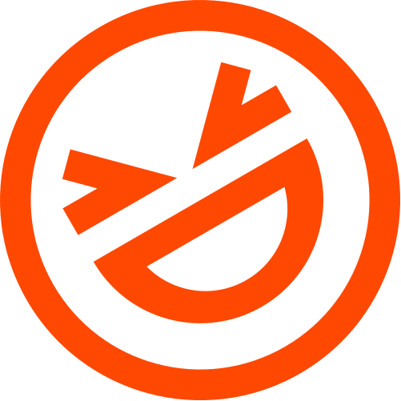

DB1 GroupDesde agosto de 2025
Designer Gráfico e AudiovisualAgosto de 2025 até hoje
Planejamento, produção e edição de conteúdo audiovisual, criação de conteúdo estratégico, desenvolvimento e desdobramento de campanhas.

carlos anibale
Videomaker especializado em motion design.
Sou formado em Jornalismo e Comunicação Social e trabalho há mais de 10 anos com edição de vídeo, motion graphics e animação 2D, em empresas nacionais e internacionais, sempre com conteúdo para produtos digitais e redes sociais.
Meu dia a dia é o pacote Adobe: After Effects, Premiere Pro, Illustrator, Photoshop e Audition. Como faço muito motion e animação 2D para SaaS, também uso o Figma com frequência no processo.
Planejamento, produção e edição de conteúdo audiovisual, criação de conteúdo estratégico, desenvolvimento e desdobramento de campanhas.
Edição, produção de conteúdo audiovisual e criação de conteúdo para todas as BUs da Nomad.
Edição e produção de conteúdo audiovisual, criação de conteúdo, desenvolvimento e desdobramento de campanhas para a BU de International Payments (Husky).
Edição e produção de conteúdo audiovisual, criação de conteúdo, desenvolvimento e desdobramento de campanhas.
Gestão de redes sociais (Instagram e Telegram), gestão e criação de conteúdo, prospecção e gestão de influenciadores digitais, design gráfico, edição de vídeos e atendimento online.
Design gráfico, gestão de redes sociais e site, gestão e criação de conteúdo, desenvolvimento e desdobramento de campanhas.
Design gráfico e atendimento online.